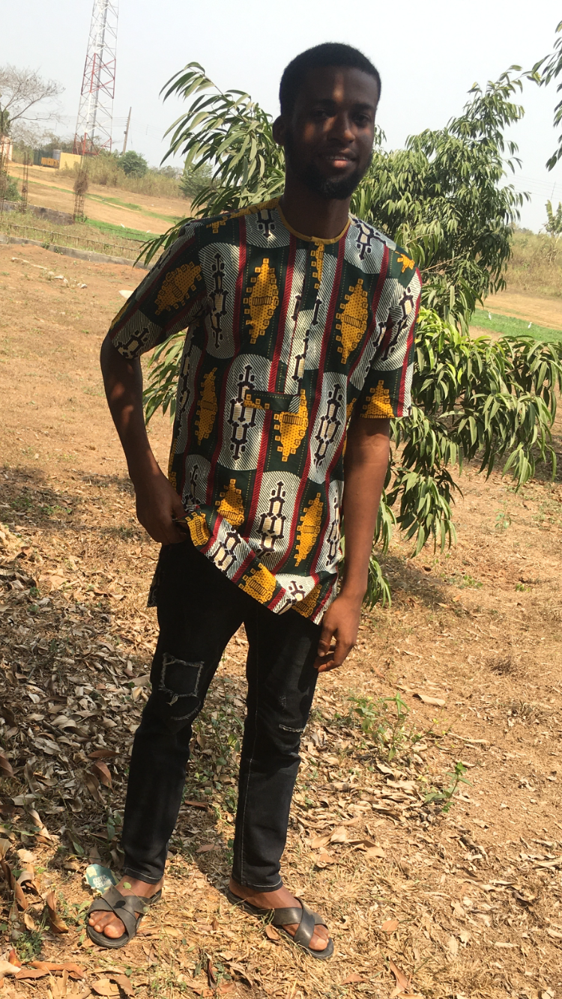
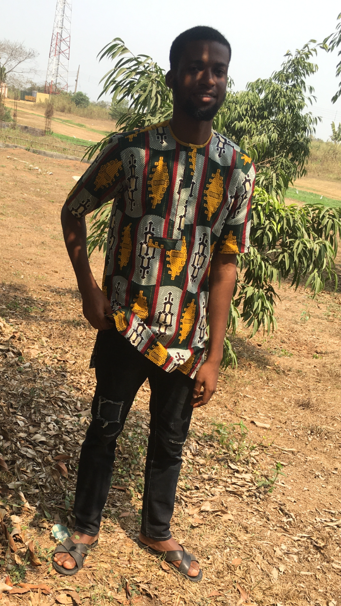

Hello, i am Aiyedona Oluwasegun
Frontend Developer
Enthusiastic and a Creative Frontend developer fusing the art of design with skills of programming to build responsive websites, proficient in html, css, javascript, plus modern libraries and frameworks.
 
